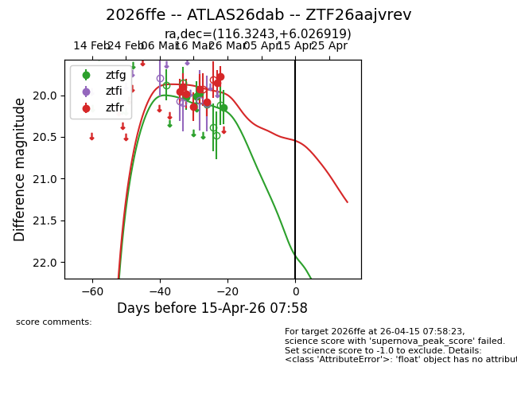
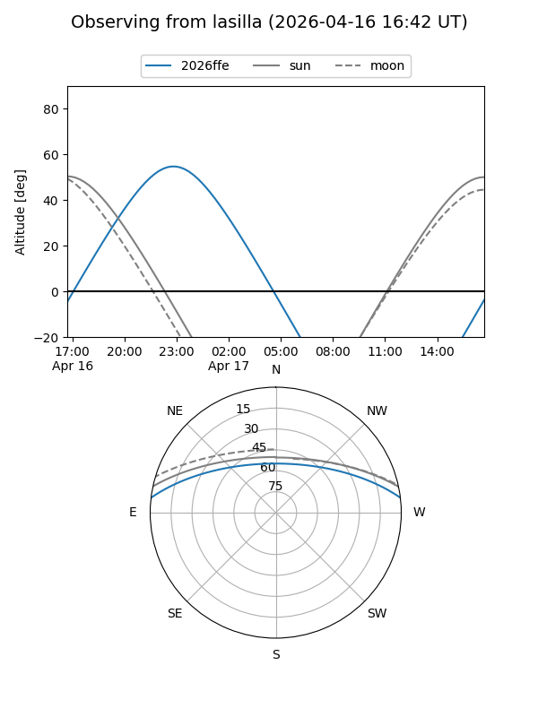
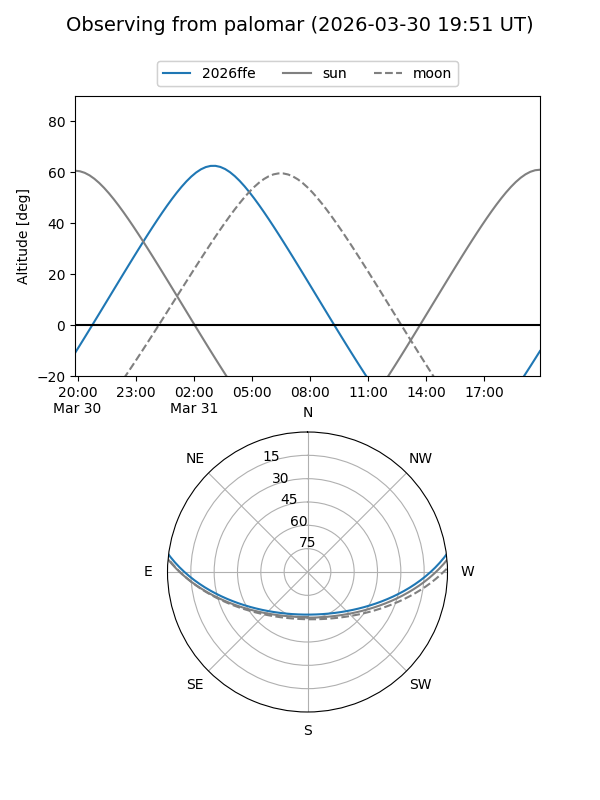
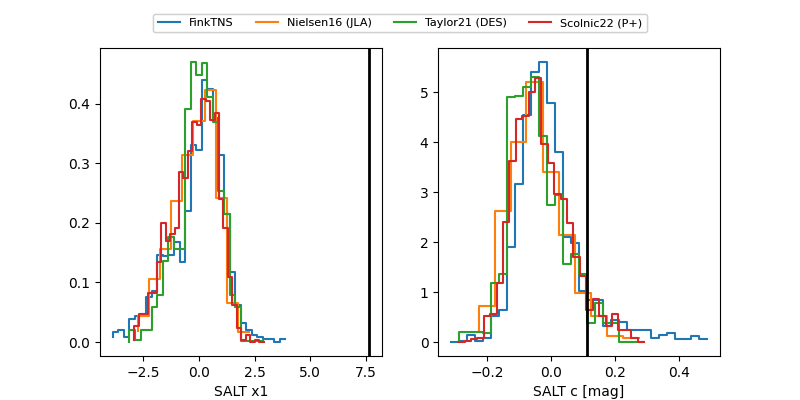

2026ffe
Target 2026ffe at 2026-04-15 08:05
Aliases and brokers:
FINK: link
Lasair: link
ALeRCE: link
TNS: link
YSE: link
alt names
ZTF26aajvrev (ztf,fink_ztf)
2026ffe (tns,yse)
ATLAS26dab (atlas)
Coordinates:
equatorial (ra, dec) = 116.3243,+6.02692
equatorial (HMS+DMS) = 07:45:17.83,+06:01:36.91
galactic (l, b) = (213.6513,+14.71215)
Flags:
Photometry:
last ztfg=20.14, ztfr=19.77
5 ztfg, 8 ztfr detections
Lightcurve

Visibility


Additional plots
